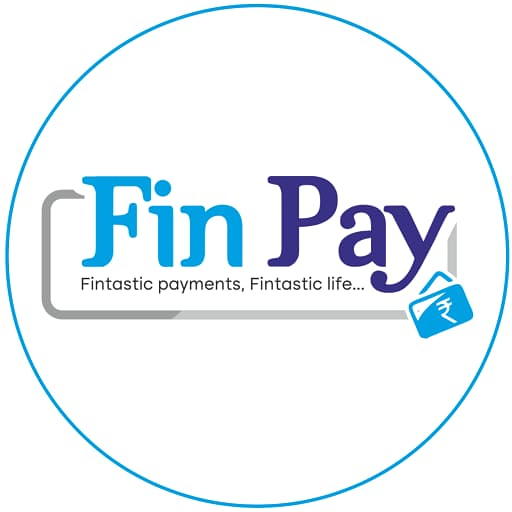
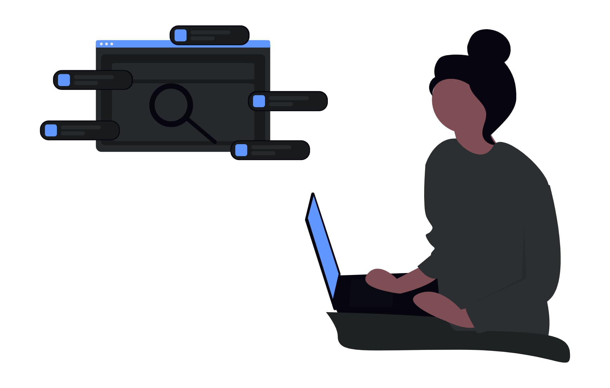

Transferencias Instantáneas
Envía dinero en segundos sin hacer largas filas.
FinPay es la aplicación financiera que te permite ahorrar, transferir dinero y administrar tus gastos de manera rápida, sencilla y totalmente segura.
Descargar Gratis
Envía dinero en segundos sin hacer largas filas.
Tecnología de cifrado para proteger tu información.
Organiza tus gastos y cumple tus metas financieras.
Más de medio millón de personas administran su dinero con FinPay. Nuestra aplicación funciona las 24 horas del día y cuenta con soporte especializado.
Comenzar AhoraUsuarios
Seguridad
Soporte
"Muy fácil de usar. Ahora ahorro cada mes."

"Excelente aplicación, rápida y muy segura."
Descarga FinPay gratuitamente y controla tus finanzas.
Descargar Aplicación